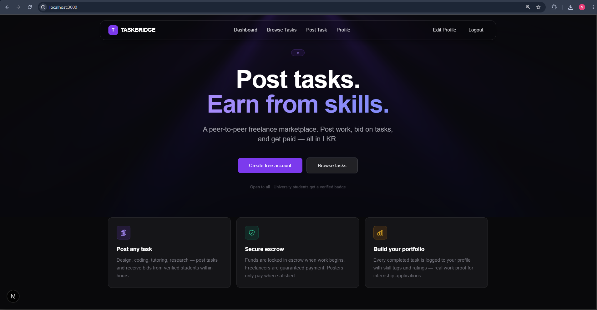

A freelance task marketplace built with Next.js, Spring Boot microservices, PostgreSQL, Redis, Kong, Docker, and AWS deployment services.
TaskBridge is a team-built freelance task marketplace for connecting clients with freelancers. Clients can post tasks, freelancers can browse listings and submit bids, and clients can accept bids to assign work. The backend separates user management, task and bidding logic, payments, and notifications into services with distinct responsibilities.
The application is hosted using a split deployment: the Next.js frontend is deployed on Vercel, while backend services and supporting infrastructure run in Docker Compose on an AWS EC2 instance. Nginx terminates HTTPS for the public API domain and forwards requests to Kong, which routes requests to the relevant microservice. DuckDNS provides the domain and Let's Encrypt provides the TLS certificate.
Deployment status: The frontend and HTTPS backend endpoint are hosted. AWS CodeBuild, Amazon ECR, and CodePipeline are being configured for automated build and deployment. PostgreSQL currently runs on EC2; migration to Amazon RDS is planned for a later stage.

Clients can create freelance tasks while freelancers browse available work and submit bids. Bid acceptance assigns the selected freelancer and moves the task into its in-progress lifecycle.
The User Service handles registration and login. Signed JWTs support stateless authentication for protected backend operations across the services.
The payment workflow creates a pending escrow after bid acceptance and supports PENDING → HELD → RELEASED states. PayHere checkout initiation and signature-validated callback handling are implemented in the Payment Service.
Task Service publishes a BID_ACCEPTED event through Redis. Payment Service consumes the event and creates the related escrow transaction without requiring a direct synchronous payment-service call.
Kong is the central backend entry point, routing requests to User, Task, Payment, and Notification services. Rate limiting provides a centralized traffic-control mechanism.
The frontend is hosted on Vercel. Backend traffic reaches AWS EC2 through a DuckDNS domain with a Let's Encrypt TLS certificate and Nginx reverse proxy before reaching Kong.
Frontend application built with the Next.js App Router, TypeScript, and Tailwind CSS. It provides registration, login, task creation and browsing, bidding, profiles, and payment-related user flows. The frontend is deployed on Vercel.
Primary backend framework for the User, Task, and Payment microservices. Services follow controller-service-repository layering and expose REST APIs for their individual business responsibilities.
Relational persistence for user, task, and payment data. PostgreSQL currently runs in Docker containers on EC2 with persistent volumes. Amazon RDS for PostgreSQL is a planned future migration, not the current database host.
Used for asynchronous event-driven communication between services. The implemented flow publishes BID_ACCEPTED from Task Service and consumes it in Payment Service.
Provides a single backend entry point and forwards requests to individual microservices. It applies gateway-level rate limiting so the frontend does not need to address each service directly.
Dockerfiles package backend applications into images, while Docker Compose runs the services and supporting infrastructure together on EC2. Named volumes preserve database data across container recreation.
An Ubuntu EC2 instance hosts the Docker Compose backend. Nginx provides the public reverse-proxy endpoint and TLS termination for the DuckDNS domain, with Let's Encrypt certificate management.
DuckDNS maps the public API hostname to the EC2 Elastic IP. A Let's Encrypt certificate enables HTTPS for browser-to-backend API requests.
AWS CI/CD setup in progress: CodeBuild is being configured to build container images, ECR stores service and gateway images, and CodePipeline is intended to coordinate source, build, and deployment stages. Automated EC2 deployment should be considered complete only after the pipeline is verified end to end.
Jenkins is also used locally for Continuous Integration, checking out source code, building Spring Boot services with Maven, producing JAR artifacts, and building Docker images. The AWS pipeline is the next step toward cloud-based automation.
The Next.js frontend is hosted on Vercel and calls the backend using the HTTPS endpoint https://task-bridge.duckdns.org. Nginx receives public HTTP/HTTPS traffic and proxies API requests to Kong. The frontend's allowed origin is configured in backend/gateway CORS settings.
Responsible for registration, login, JWT generation, authentication, and user/profile operations. Protected backend operations use authenticated identity rather than trusting arbitrary client-supplied user IDs.
Owns tasks, bids, task lifecycle rules, and freelancer assignment. When a client accepts a bid, the task is assigned to the selected freelancer, changes to IN_PROGRESS, and a BID_ACCEPTED event is published.
Consumes accepted-bid events, creates escrow transactions, generates PayHere checkout parameters, validates payment callbacks, moves successful payments to HELD, and supports authorized release to RELEASED.
A separate Node.js service is part of the wider architecture for notification-related functionality. The core demonstrated workflow focuses on User, Task, and Payment services.
The planned workflow connects source changes to CodePipeline, uses CodeBuild to build Docker images, pushes images to Amazon ECR, and then updates the running services on EC2. The deployment stage is not described as complete until an end-to-end pipeline run has succeeded.
Challenge: Direct REST communication would make bid acceptance more dependent on immediate Payment Service availability.
Solution: Implemented asynchronous Redis event communication. Task Service publishes BID_ACCEPTED and Payment Service independently consumes the event to create the pending escrow transaction.
Challenge: Multiple services needed to validate application JWTs consistently.
Solution: Configured a shared strong JWT signing secret for relevant backend services and kept application JWT validation within the services rather than relying on Kong to issue application tokens.
Challenge: A Vercel-hosted HTTPS frontend cannot reliably call an HTTP-only backend because browsers block mixed-content requests.
Solution: Configured a DuckDNS hostname for the EC2 Elastic IP and set up Nginx with a Let's Encrypt certificate so the public API can be accessed over HTTPS.
Challenge: Containers cannot use localhost to reach other containers because localhost refers to the current container.
Solution: Used Docker Compose service names such as postgres, redis, user-service, and payment-postgres as network hostnames and configured service-specific environment variables.
Challenge: Building several microservices and publishing their Docker images manually is repetitive and error-prone.
Solution: Existing local Jenkins automation builds Spring Boot JARs and Docker images. AWS CodeBuild, ECR, and CodePipeline are being configured to move the build and deployment workflow into AWS.